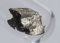

cerium

Definition: Cerium is a chemical element with the symbol Ce and atomic number 58. Cerium is a soft, ductile, and silvery-white metal that tarnishes when exposed to air. Cerium is the second element in the lanthanide series, and while it often shows the oxidation state of +3 characteristic of the series, it also has a stable +4 state that does not oxidize water. It is also considered one of the rare-earth elements. Cerium has no known biological role in humans but is not particularly toxic, except with intense or continued exposure.
Source: Wikipedia
Wikipedia Page
Wikidata Page